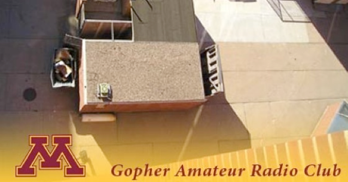

The Gopher Amateur Radio Club At The University of Minnesota


...has been talked about in public safety circles for years. How does the Fire Department talk over the radio with the Police Department to work together to get stuff done?
For the next three years, The Gopher Amateur Radio Club At The University of Minnesota is exploring ways for amateur radio groups -- who traditionally do not work well together -- to work together to achieve getting stuff done with amateur radio. Our club’s mission for these three years is:
To promote, create and provide interoperability
with other amateur radio groups in the Twin Cities.
But there’s so much more then a mission statement. Here’s a few projects our club has done to work towards this goal-ish mission:
-Our group and it’s membership attends other radio club’s meetings, moving our own meeting to attend unique speakers at groups like The Twin Cities FM Club (TCFMC), The Twin Cities Repeater Club (TCRC), and Anoka County Radio Club.
-Our group rents for free several tactical (field-ready) repeaters to other groups, such as Anoka County Amateur Radio Emergency Services (Anoka-ARES), Anoka County Radio Club and Convergence-Con (a Sci-Fi convention in Bloomington) during the summer months of June and July for annual parades, July 4th 5K runs, and conventions with 4K in attendance.
-Our group saw a need for better APRS coverage and two-way internet messaging (similar to the Mobile Data Terminals, MDT systems, that police cars use) using an existing slow-speed amateur radio network in the Twin Cities. It was clear after July 2009’s MS-150 bike ride that messaging capabilities and two-way (not one-way as existed) communication to/from the internet were needed. Our group setup a wide-area coverage APRS node at 200 feet that immediately started relaying and routing 60% to 85% of all location data for mobile stations in the ten-county metro area. Our node filled-in a large coverage gap that existed near down town Minneapolis.
... And so many more interesting projects, signed agreements and more to come. If you are looking to join an amateur radio club that is doing stuff, we want you. Please, come to one our meetings. If you want to talk about doing stuff, go someplace else -- there are plenty of clubs that talk about the 1960’s over and over again. That’s not us. We’re moving forward and doing new, innovative things with amateur radio.
-matt
N0YNT
(Matthew Genelin, Vice President, Gopher ARC
Interoperability...
Calendar
We have meetings every Tuesday night, starting at 19:30 (7:30PM). Most are located in our ham shack / dispatch center of 100 Union Street SE, Minneapolis, MN. Look for the outbuilding just west of Shepard Labs, down the alley.
Our group now has three types of meetings:
-
1.A project-based “Action Team” meeting as needed for projects.
-
2.A social meeting once per month, location announced on the w0yc@tdkt.org mailing list for presenting “done” projects, new club members and such.
-
3.A n00b-based teaching “Education Team” meeting for new amateurs, folks’ wanting a tour of our facility from out of town, or contests. One-to-one training is done at the Education Team meetings. Meetings scheduled as desired.
Gopher Amateur Radio Club at the University of Minnesota
Shepherd Labs, 100 Union St. SE #103, Minneapolis, MN 55455.
Email: w0yc@arrl.net
Local: (612) 625-7844 /Toll-Free: (888) 544-RADIO
On-Air: 147.150 MHz 114.8Hz / 444.425 MHz 114.8Hz
Twitter @w0yc